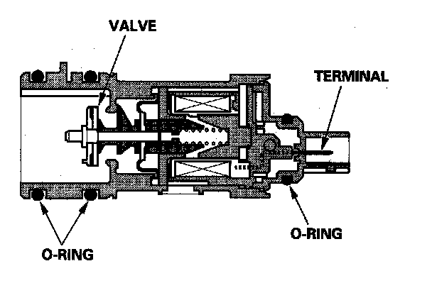

Operation CHARM
: Car repair manuals for everyone.
Home
>>
Acura
>>
2007
>>
MDX V6-3.7L
>>
Repair and Diagnosis
>>
Powertrain Management
>>
Emission Control Systems
>>
Evaporative Emissions System
>>
Evaporative Emission Control Canister
>>
Canister Vent Valve
>>
Description and Operation
Canister Vent Valve: Description and Operation

EVAP Canister Vent Shut Valve
The EVAP canister vent shut valve is on the EVAP canister.
The EVAP canister vent shut valve controls the venting of the EVAP canister.